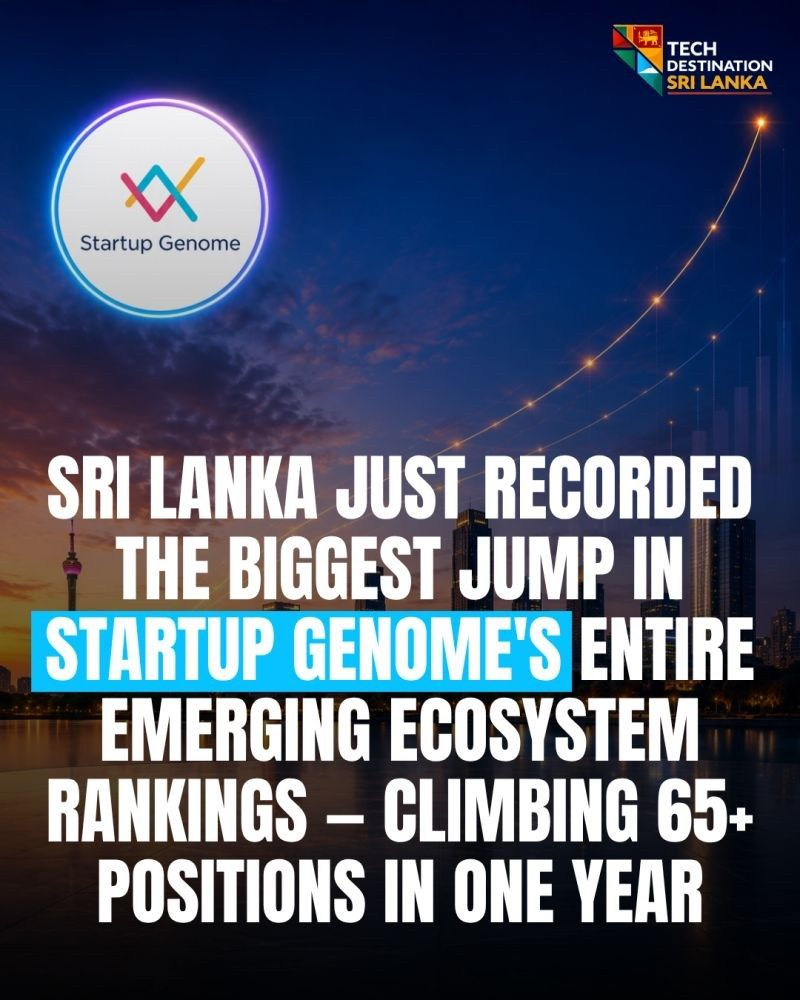

Sri Lanka made the biggest jump in Startup Genome's 2026 emerging ecosystem rankings
The Global Startup Ecosystem Report 2026 ranks Sri Lanka third in Asia for affordable tech talent after a climb of more than 65 positions.

- 65+
- positions climbed in one year
- #3
- in Asia for affordable tech talent
- 12,000+
- ICT graduates a year
The Global Startup Ecosystem Report 2026 is Startup Genome's annual benchmark, built on data from 5.5 million+ startups across 350+ ecosystems.
In this year's edition, Sri Lanka recorded the biggest jump in the entire Emerging Ecosystem rankings, climbing more than 65 positions in a single year.
The numbers behind it
Sri Lanka ranks third in Asia for Affordable Tech Talent. It produces 12,000+ ICT graduates every year. And it is increasingly recognised for innovation in fintech, govtech and agritech.
Sri Lanka is solidifying its position as a rising innovation hub powered by exceptional technical talent, business-friendly policies and innovative government support.
Marc Penzel, founder, Startup Genome
The startups it named
The report spotlighted Sri Lankan startups making global moves: Kaiju Labs (fintech, acquired by Singapore's KAST Finance), Jendo Innovations (biotech with patented vascular health technology) and Rootcode (govtech).
Why this matters
The report is an independent global benchmark read by investors, policymakers and founders worldwide. When Sri Lanka posts the single biggest climb on that list, it is external validation, measured by the people who measure the whole world.
Sources
